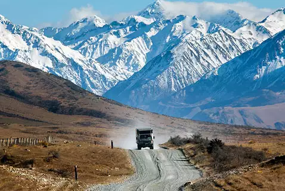

La Nouvelle-Zélande attire pour la beauté de ses paysages. En effet, on y retrouve un relief très diversifié avec ses montagnes, plaines et plateaux et le tout entouré par l'océan. Ses nombreuses forêts et cascades attestent de l'importante place de la nature dans ce pays et de la richesse de la faune et la flore. On peut ainsi y croiser de nombreuses espèces telles que des:
possums
orques
baleines
oiseaux (kiwis, kakapos, keas...)
manchots
dauphins
otaries
requins

"En Nouvelle-Zélande, nous répugnons à être impliqués dans les complications du monde, nous restons paisiblement avec nos moutons, nos vaches et nos livres." Peter Jackson